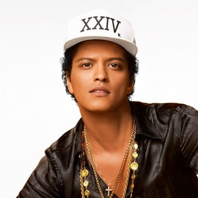

Bruno Mars
Born: 08 October 1985
Age:
Years Active: 1990–present
Genre/s: Pop, R&B, funk, soul
Label/s: Universal Motown, Atlantic, Elektra
Member of: The Hooligans, Silk Sonic
Peter Gene Hernandez (born October 8, 1985), known professionally as Bruno Mars, is an American singer-songwriter, record producer and dancer. Regarded as a pop icon, he is known for his three-octave tenor vocal range, live performances, retro showmanship, and musical versatility. He is accompanied by his band, the Hooligans. Raised in Honolulu, Mars gained recognition in Hawaii as a child for his impersonation of Elvis Presley, before moving to Los Angeles in 2003 to pursue a musical career.
Mars established his name in the music industry as a songwriter and co-founder of the production team the Smeezingtons. He rose to fame as a recording artist after featuring on the US number-one single "Nothin' on You" (2009) by B.o.B. Mars's first three studio albums—Doo-Wops & Hooligans (2010), Unorthodox Jukebox (2012), and 24K Magic (2016)—found critical and commercial success, with the lattermost winning the Grammy Award for Album of the Year. The albums spawned multiple international hit singles, including "Just the Way You Are", "Grenade", "The Lazy Song", "Locked Out of Heaven", "When I Was Your Man", "Treasure", "24K Magic", "That's What I Like", and "Finesse". He also featured on Mark Ronson's 2014 single "Uptown Funk", which became Billboard's best-performing song of the 2010s.
In 2021, Mars released An Evening with Silk Sonic alongside Anderson .Paak, as the musical superduo Silk Sonic. The album contained the US number-one single "Leave the Door Open". Following two record-breaking number-one duets in 2024, "Die with a Smile" with Lady Gaga and "APT." with Rosé, Mars released his first solo album in ten years, The Romantic (2026). It was led by his first US number-one debut, "I Just Might".
Mars has sold over 150 million records worldwide, making him one of the best-selling music artists of all time, and he amassed ten number-one singles on the Billboard Hot 100. He is the longest-reining act in the Billboard Global 200 chart history (31 weeks) and the only artist to surpass 150 million monthly listeners on Spotify. His 24K Magic World Tour (2017–2018) ranks among the highest-grossing tours in history. Mars's accolades include 16 Grammy Awards, 14 American Music Awards, 5 Brit Awards, and 14 Soul Train Awards. Time named him among the 100 most influential people in the world in 2011. He was the first artist with six RIAA Diamond-certified songs.

I Just Might
Bruno Mars

Risk It All
Bruno Mars
Cha Cha Cha
Bruno Mars
God Was Showing Off
Bruno Mars
Why You Wanna Fight?
Bruno Mars
Dance With Me
Bruno Mars
On My Soul
Bruno Mars
Something Serious
Bruno Mars
Nothing Left
Bruno Mars